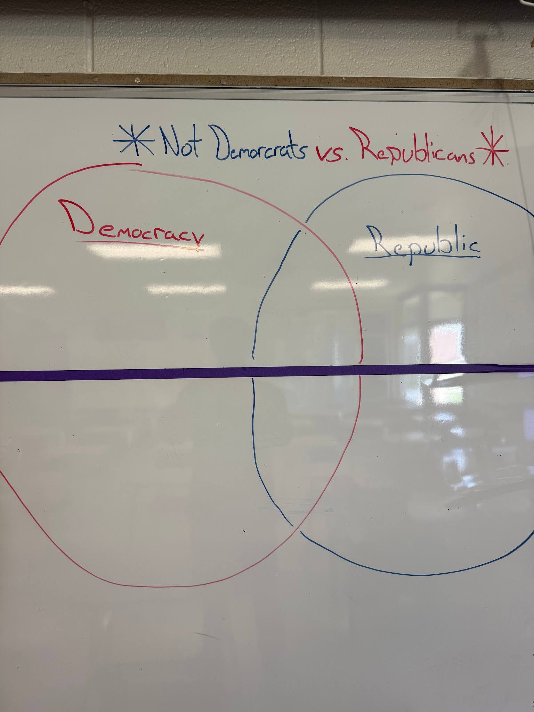

This example shows a time when I was having students write a short exit ticket paper where they needed to explain whether they would rather live in a republic or a democracy. As they were writing their responses, and I was reading some from prior hours, I noticed that many students were treating the question as if it were asking them if they wanted to live somewhere where there were either democrats or somewhere run by republicans. Right then and there, I stopped my class from finishing, and we made a Venn diagram as a class to show the differences between a republic and a democracy. I also mentioned many times and wrote on the board that the topic had nothing to do with being a republican or a democrat. As an educator, many unpredictable scenarios might happen, and I feel as though it is my job to react quickly and help my students to the best of my ability to ensure they are obtaining the necessary information to succeed in and outside of my class.